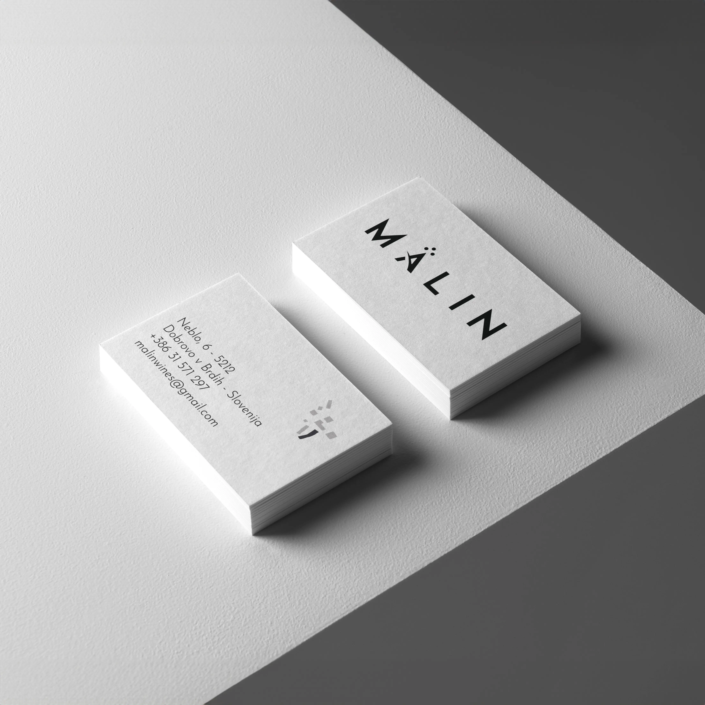
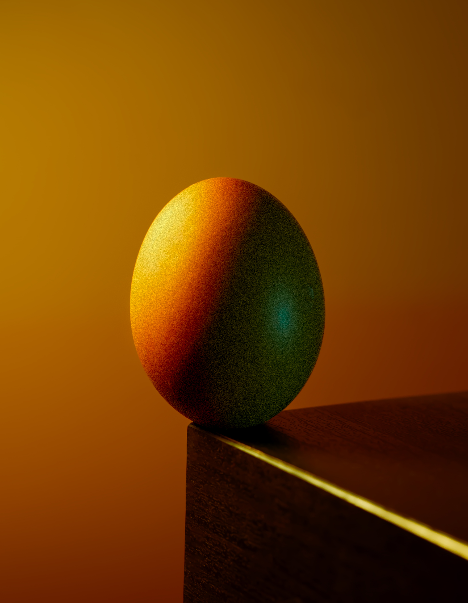

Graphic designer, fotografo e videomaker a Gorizia
Grafica, fotografia — anche con drone — video e contenuti per aziende e professionisti che vogliono farsi notare, essere più credibili e farsi scegliere con più facilità.
Qui trovi le aree che costruiscono davvero la percezione.
Lavoro come graphic designer a Gorizia, fotografo e videomaker. Qui trovi i servizi creativi che rendono il brand più chiaro, più riconoscibile e più credibile. Per marketing, siti e campagne c’è Spark & Plan.
Grafica & Brand
Logo, identità visiva, materiali e direzione grafica per presentarti con più coerenza.
Apri la pagina →
Fotografia & Contenuti
Servizi fotografici professionali a Gorizia — anche con drone — per prodotti, persone, ambienti e contenuti che rendono il brand più forte.
Apri la pagina →
Video & Reel
Reel, brand video e storytelling visivo per i social: contenuti che fermano lo scroll e fanno parlare di te.
Apri la pagina →
Marketing & Digital
Strategia, sito web, social e campagne li seguo attraverso Spark & Plan, il mio progetto dedicato al marketing.
Vai a Spark & Plan ↗
Brand identity & sistema visivo
Logo, palette, tipografia, tono e materiali. Costruisco identità visive coerenti che rendono la tua azienda riconoscibile e memorabile in ogni punto di contatto. A Gorizia e in Friuli Venezia Giulia, lavoro con aziende che vogliono distinguersi senza sembrare improvvisate o generiche.
La brand identity non è solo un logo. È il sistema di scelte che definisce come il tuo brand appare su biglietti da visita, brochure, presentazioni, packaging, insegne, materiali commerciali e contenuti visivi. Quando ogni elemento parla la stessa lingua, il brand sembra più solido e più credibile.
Per le imprese del territorio — cantine, ristorazione, hospitality, studi professionali e PMI — un'identità visiva forte significa essere riconoscibili al primo sguardo e comunicare professionalità prima ancora di dire una parola. Ogni progetto viene costruito su misura, partendo da percezione, contesto e obiettivi reali.
Il mio metodo in 4 step:- Analisi — studio il mercato, il posizionamento attuale e le aspettative del pubblico target.
- Strategia — definisco personalità di marca, valori, tono di voce e direzione visiva.
- Esecuzione — progetto logo, palette, tipografia, linee guida e tutti i materiali applicativi.
- Misurazione — valutiamo insieme la percezione del brand e l'efficacia dei materiali nel tempo.
Logo e identità visiva
Servizi di grafica a Gorizia: design del marchio, palette colori, tipografia e linee guida per un uso coerente su tutti i supporti.
Materiali di comunicazione
Biglietti da visita, brochure, presentazioni e tutti i materiali che rappresentano il tuo brand.
Direzione visiva
Scelte visive, coerenza e linee guida per far apparire il brand più ordinato, chiaro e riconoscibile.
Approfondisci logo design a Gorizia · social e campagne con Spark & Plan



Logo Design
Un logo non è solo un simbolo. È il primo punto di contatto tra il tuo brand e il mondo. Progetto marchi che comunicano chi sei in meno di tre secondi: riconoscibili, scalabili e costruiti per durare nel tempo. A Gorizia e in tutto il Friuli Venezia Giulia, lavoro con aziende e professionisti che vogliono un marchio all'altezza della loro ambizione.
Riconoscibilità
Un marchio che si distingue al primo sguardo, in qualsiasi formato e dimensione.
Scalabilità
Funziona su un biglietto da visita come su un cartellone: ogni variante è prevista e testata.
Durabilità
Design senza tempo, costruito per accompagnare il tuo brand per anni senza invecchiare.
Video & Reel per i social
Realizzo video e reel a Gorizia per aziende e professionisti che vogliono raccontarsi in movimento: brand video, contenuti per i social e storytelling visivo che ferma lo scroll e fa parlare di te.
Dalla ripresa al montaggio, ogni video è pensato per il formato giusto e per il pubblico giusto — con riprese anche da drone dove serve uno sguardo dall’alto.
Reel & short
Contenuti verticali pensati per il ritmo dei social, dove i primi secondi decidono tutto.
Brand video
Video che raccontano l’attività, il prodotto o la persona con un tono coerente al brand.
Riprese drone
Inquadrature aeree per immobili, eventi, nautica e territori: uno sguardo che cambia la scena.
Marketing & Digital
Strategia di marketing, siti web, campagne pubblicitarie, SEO e social media management li seguo attraverso Spark & Plan, il mio progetto dedicato al marketing e al digitale.
Così la parte creativa e quella strategica restano collegate ma con la giusta specializzazione: io costruisco l’immagine, Spark & Plan la mette in movimento.
Strategia & campagne
Posizionamento, advertising e funnel per trasformare la presenza in richieste concrete.
Siti web
Siti e landing page costruiti per farti trovare e per convertire le visite in contatti.
Social management
Gestione continuativa dei canali, piano editoriale e community, con la mia parte visiva integrata.
Fotografia Professionale
Come fotografo a Gorizia, realizzo servizi fotografici professionali per e-commerce, cataloghi aziendali, packaging, presentazioni e materiali di brand. Le immagini giuste aumentano il valore percepito: fotografia commerciale, ritratti corporate e reportage aziendale sono strumenti concreti per comunicare meglio il livello della tua attività. Sono disponibile in tutto il Friuli Venezia Giulia e nel corridoio transfrontaliero Gorizia–Nova Gorica.
Un'immagine professionale non è un costo: è un investimento che si ripaga nel tempo. Le aziende del territorio — cantine del Collio, ristoranti, artigiani, studi professionali — lo sanno bene: la qualità visiva è il primo biglietto da visita. Come fotografo aziendale a Gorizia, il mio approccio parte sempre dalla comprensione del brand e del messaggio che vuoi comunicare. Che si tratti di uno still life per il tuo e-commerce, di ritratti per il team o di un reportage che racconti la tua attività, lavoro con luce naturale e artificiale, in studio e on location, adattando ogni shooting fotografico professionale alle esigenze specifiche del progetto.
La fotografia prodotto in Friuli Venezia Giulia è parte integrante di un sistema visivo credibile. Un catalogo con immagini curate, materiali commerciali ordinati, presentazioni che trasmettono qualità: sono tutti elementi che contribuiscono a posizionare meglio il brand nella mente del cliente. Per le aziende di Gorizia e del FVG, offro un servizio completo dalla pianificazione dello shooting fotografico professionale FVG alla post-produzione, con consegna rapida e formati ottimizzati.
Il mio metodo in 4 step:- Analisi — studio il tuo brand, il target e i canali dove verranno utilizzate le immagini.
- Strategia — definiamo insieme lo stile, il mood e la lista degli scatti necessari.
- Esecuzione — realizzo il servizio fotografico con attrezzatura professionale e attenzione ai dettagli.
- Misurazione — valutiamo l'impatto delle immagini sulle conversioni e sulla percezione del brand.
Fotografia commerciale
Packshot, still life e immagini per e-commerce, cataloghi e brand. Immagini che vendono.
Ritratti corporate
Ritratti professionali per team, profili LinkedIn e comunicazione aziendale.
Reportage aziendale
Documentazione di eventi, processi produttivi e vita aziendale per materiali di brand, presentazioni e comunicazione aziendale.



Scopri tutti i servizi di fotografia professionale a Gorizia
Parliamo del tuo progetto
Raccontami cosa vuoi ottenere. Ti dico se e come posso aiutarti — senza impegno.
ScrivimiDomande sui servizi
Quanto costa un progetto di brand identity o logo design?
Dipende dal livello di lavoro richiesto: restyling del logo, identità visiva completa, linee guida, materiali applicativi o sistema coordinato più ampio. Il preventivo viene costruito sul progetto reale, non con pacchetti standardizzati.
Realizzi anche video e reel?
Sì. Giro e monto video e reel per i social — brand video, contenuti verticali, storytelling visivo — con riprese anche da drone quando il progetto lo richiede.
E per sito web, social management e campagne?
Quella parte la seguo attraverso Spark & Plan, il mio progetto dedicato al marketing e al digitale: sparkandplan.it. Io creo i contenuti visivi, Spark & Plan li mette in strategia.
La fotografia commerciale rientra nel lavoro?
Sì. La fotografia commerciale rientra quando serve a rendere più credibile il brand, valorizzare i prodotti o dare più qualità a cataloghi, packaging, presentazioni e materiali di comunicazione.
È possibile costruire un sistema coordinato tra logo, materiali e immagini?
Sì. È una delle situazioni in cui il lavoro funziona meglio: logo, grafica aziendale e immagini parlano la stessa lingua e il brand appare subito più solido, ordinato e riconoscibile.